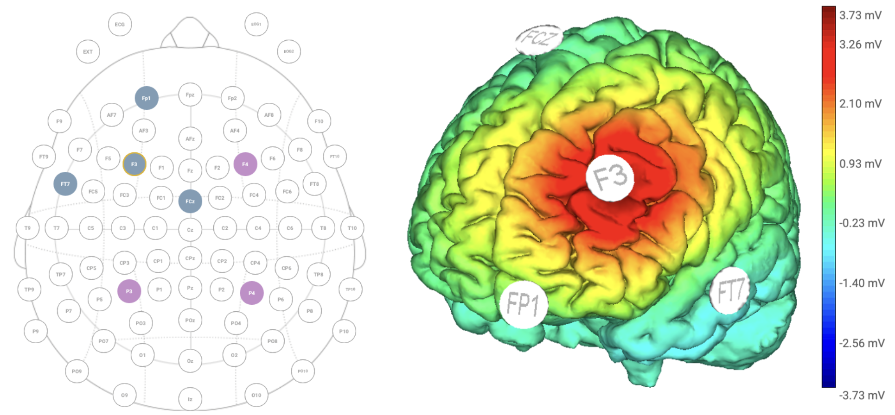

James B. Wyngaarden III
Neuroeconomics · Reward Processing · Decision Making
About Me
I'm a PhD candidate in cognitive neuroscience at Temple University, working with David V. Smith in the Neuroeconomics Lab. Our work uses fMRI, noninvasive brain stimulation (tACS), and computational modeling to understand why people persist with unrewarding choices — and what it takes to shift those patterns. Our work spans reward processing, social decision-making, and economic games commonly used in neuroeconomics, including trust, fairness, and risky choice paradigms.
My recent work, funded by an NIH F31 fellowship from the National Institute on Aging, focuses on older adults, who show marked declines in cognitive flexibility. Reversal learning — the ability to update behavior when reward contingencies change — is a useful behavioral probe for this kind of prefrontally-mediated reward processing, and I'm testing whether tACS targeting dorsolateral prefrontal cortex can help restore that function. In the real world, the ability to adapt to new medication routines, adjust financial strategies, or shift social behaviors after life transitions are essential to successfully navigating through life.
More broadly, I'm committed to open and reproducible science. I've contributed to three publicly released neuroimaging datasets on OpenNeuro totaling over 500 participants, with data drawing on methods spanning task-based and resting-state fMRI, diffusion imaging, and computational modeling. My goal is to deepen our understanding of how reward processing and decision-making change across the lifespan, and translate that knowledge into tools that help people achieve better outcomes.
Research
Reward Processing and Decision Making

Behavioral motivation moderates the relationship between reward sensitivity and ventral striatum–default mode network connectivity. (Wyngaarden et al., 2026, CABN)
Stable traits like reward sensitivity manifest differently in the brain depending on motivational state — among highly motivated individuals, greater reward sensitivity enhances connectivity between the default mode network and ventral striatum, but this reverses among less motivated individuals (Wyngaarden et al., 2026, CABN). These trait-level differences also shape social engagement and predict substance use behavior even in subclinical populations (Wyngaarden et al., 2024, SCAN). I've also contributed to work showing that ambiguity avoidance reflects imprecision in learned beliefs rather than a stable preference for certainty (Shah et al., 2025, PsyArXiv).
Aging, Cognitive Flexibility, and Brain Stimulation

HD-tACS montage targeting left DLPFC.
Cognitive flexibility declines with age, mapping onto real-world challenges like adjusting financial strategies or adapting routines after major life transitions. My dissertation uses reversal learning paired with tACS targeting prefrontal cortex to test whether stimulation can improve adaptive decision-making in older adults (Smith, Wyngaarden et al., 2026, bioRxiv) — work framed by a broader theoretical focus on confirmation bias and financial exploitation (Wyngaarden et al., 2026, Springer).
Open Science and Research Infrastructure
I've contributed to three publicly released neuroimaging datasets on OpenNeuro totaling over 500 participants: social and nonsocial reward processing in young adults (Smith, Wyngaarden et al., 2023, Data in Brief), lifespan reward processing with multi-echo fMRI and diffusion imaging (Smith et al., 2024, Data in Brief), and risky/ambiguous decision-making using the Linked Colored Lottery Task (Wyngaarden et al., 2025, Data in Brief).